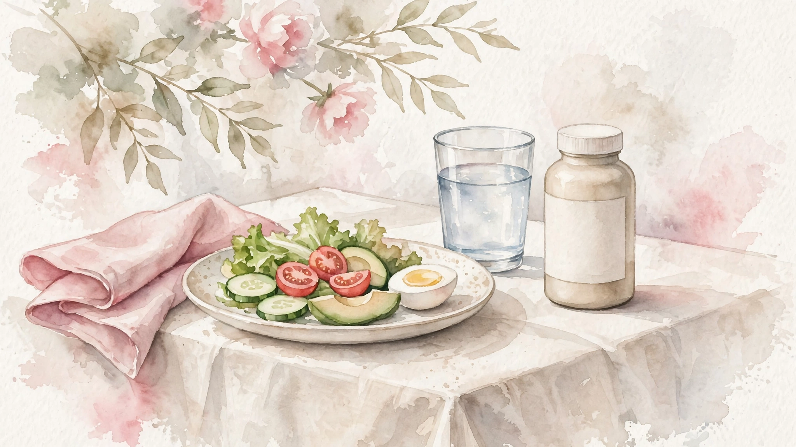

トップ ＞ インナーケア・サプリ ＞ 『食後』『食事と一緒に』の案内の読み方
『食後』『食事と一緒に』の案内の読み方

サプリメントのパッケージには、「食後にお飲みください」「食事と一緒に」といった案内文が書かれていることがあります。短い一文ですが、商品によって文言の種類がいくつかあり、読み方を知っておくと自分の生活に置きやすくなります。この記事では、食事にまつわる案内文の読み方を整理します。
文言には、いくつかの種類がある
代表的なのは「食後」です。食事の後に飲むタイミングが案内されています。「食事と一緒に」は、食事の最中から食後にかけての幅を持たせた書き方です。「食前」と書かれているものもありますし、食事のタイミングに触れず「1日◯粒を目安に、水などと一緒に」とだけ書かれているものもあります。
どの文言かは商品ごとの案内であり、その商品の前提です。自分の飲んでいる商品の案内文がどれなのかを、まず確認してください。同じメーカーの商品でも、種類が違えば案内が違うことがあります。
自分の食事の流れに「置く」
案内文を読んだら、次は自分の食事の流れのどこに置くかを決めます。朝食の後、夕食の後など、毎日繰り返す食事の直後に置くと、食器を下げる動作とセットになり、習慣化しやすくなります。私は施術のお客様にも、「置き場所は食卓の近く、タイミングは片付けの前」という組み立てを話すことがあります。
外食の日も、置き方は変えません。帰宅後の食事に準ずるタイミングに置くか、携帯用のケースで持参するかは、自分の生活に合わせて決めて構いません。食事が不規則な日は、無理に案内の時刻に合わせようとせず、その日の食事の流れの中で置くのが現実的です。
飲み忘れたときの考え方
食後に飲み忘れて、次の食事の直前に気づくことがあります。その場合も、まとめて多く飲むことはしません。目安量は1日の総量の案内であり、忘れた分を倍にして取り戻すものではありません。
案内文に飲み忘れの場合の扱いが書かれている商品もあります。書かれていない場合は、無理に判断せず、その日の分は通常の量にとどめるのが基本です。案内文は短い一文ですが、「いつ・どれくらい」という情報が詰まっています。買ったときに一度読み、自分の食事のどこに置くかまで決めておくと、毎日の迷いがなくなります。
案内文は、目安量の欄とセットで読む
食事にまつわる案内文は、一日摂取目安量の欄の近くや、「お召し上がり方」「摂取方法」といった見出しの下に書かれていることが多いです。「食後に、水などと一緒に」というように、飲み物の案内と組み合わさって一文になっていることもあります。買ったときに、目安量・タイミング・飲み物の3点を一続きで読んでおくと、表示の全体像がつかめます。
商品を切り替えるときも、前の商品の案内を引き継がないことが大切です。見た目が似ていても、案内文は商品ごとに違います。切り替えのたびに、新しい商品の案内文を読み直す。この小さな習慣が、表示に沿った使い方を支えます。
施術の現場でも感じることですが、続けている方の多くは、タイミングを「考えなくていい形」にしています。食後の片付けの前に飲む、食卓の引き出しに入れておく、といった具合に、食事の動作と飲む動作をくっつけてしまうのです。案内文の読み方と、置き場所の工夫は、セットで考えるとうまくいきます。
朝食をとらない生活の方もいます。その場合は、昼食や夕食など、自分が確実にとる食事の後に置く組み立てが現実的です。案内文の「食後」は、自分の食事のリズムの中で読むものです。無理に食事の回数を増やしてまで合わせる必要はありません。
食事の内容が軽い日と重い日で、置くタイミングを変える必要もありません。一定のリズムを保つことの方が、続けやすさにつながります。
セラフィナ「『食後』の一言は、食事の流れに置く合図。自分の食卓に合わせて読もう」